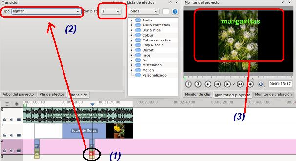

Edición de Audio y video
1.2.2 Añadir un título y transiciones
En ocasiones necesitamos rotular o señalar alguna parte de nuestra presentación de fotos y para ello, tal como hemos visto en temas precedentes, podemos utilizar el Titulador (Clip de Título) que dispone el Kdenlive para realizarlo.
- Abrimos el proyecto3 generado en el apartado 1.2 y modificado en el apartado anterior con el sonido.
- Nos ubicamos en el árbol de proyectos y botón derecho añadir clip de título.
- Para escribir un texto (ejemplo: flor1), selecciona el icono T (Texto) de la barra de herramientas del título. Escribe el título en la zona central. El texto lo puedes ubicar de acorde a la posición que desees que salga en el video.
Los cuadrados grises con blancos nos indican que nuestro fondo es transparente. Si deseas añadir un fondo, el icono azul al lado del Texto te permite dibujar un rectángulo con el color que desees y formaría parte del fondo.
AÑADIR TEXTOS O TÍTULOS A NUESTRA PRESENTACIÓN
- Genera el resto de titulaciones que desees. Mueve las mismas a una pista de audio y video. Si no dispones de pistas de este tipo puedes crear una pista nueva o desplazar el sonido a una pista de audio exclusivamente.
-
En este ejemplo hemos creado tres títulos, hemos desplazado (a) el clip de presentación unos segundos a la derecha, añadimos (b) tres clips de títulos y movimos (c) el clip de audio a la última pista.
-
Excepto, el primer y el último título, observarás que no se observa el del centro en la reproducción en tu monitor de proyectos. para ellos debemos generar unas transiciones. Las transiciones se utilizan cuando deseamos cambiar de un clip a otro (o de una escena a otra) de manera suave y gradual.
- Para poder realizar transiciones necesitamos que los clips, entre los que vamos hacer la transición, se solapen. Es decir, si el clip de la pista 0 (presentación) se inicia en el segundo 5, el clip de título (pista 1) debe llegar hasta el segundo 6, al menos. Observa la imagen y observamos que en este caso no hay solapamiento.
AÑADIR TRANSICIONES EN NUESTRAS PISTAS
- Debemos desplazar y, en muchas ocaiones estirar, uno de los clips (generalmente el de título) para que exista, al menos, unos segundos de solapamiento para poder aplicar una transición.
- Nos ponemos en la zona de solapamiento entre clips y botón derecho / añadir transición. Elegimos la composite.
-
Ahora, para indicar los parámetros de la transición, debemos hacer clic en la pista en la que hemos añadido la transición. En nuestro caso composite.

- Hecho clic en (1), en la parte de árbol de proyectos se nos abre la pestaña de Transición. Puedes elegir cualquiera de los tipos de transición que existe (3) y debemos indicar el clip, en nuestro caso pista 1, queremos que realice una transición (4) con la pista 0 (diapositivas). Podemos indicarle otra serie de efectos: Opacidad (5) y la forma en la que se realizará la puesta del clip sobre nuestra diapositas (encima, sólo uno o la otra, entre otras) (6). En próximo tema se profundizará sobre las transiciones.
- Repite el proceso con otras transiciones que hayas agregado. Observa como (1) seleccionamos la transición, modificamos el tipo de transición (2) y observamos el resultado en el monitor del proyecto (3).

- En la parte final generamos un título que indique el fin y al agregarle la transición aplica la transición (1) affinecomposite (2), modifica los valores a tu gusto en (3) y, al reproducir, en el monitor del proyecto te encontrarás con una transición diferente.

- Guarda el proyecto y genera un fichero de video con el perfil que gustes. Observa como tienes generado un clip de fotos con música de fondo y títulos para mejorar tu presentación.
Jo.R.C.A. 2004 - 2011

Edición de Audio y Video con Software Libre by José Ramón Cerdeira Alonso is licensed under a Creative Commons Reconocimiento-No comercial-Compartir bajo la misma licencia 3.0 España License